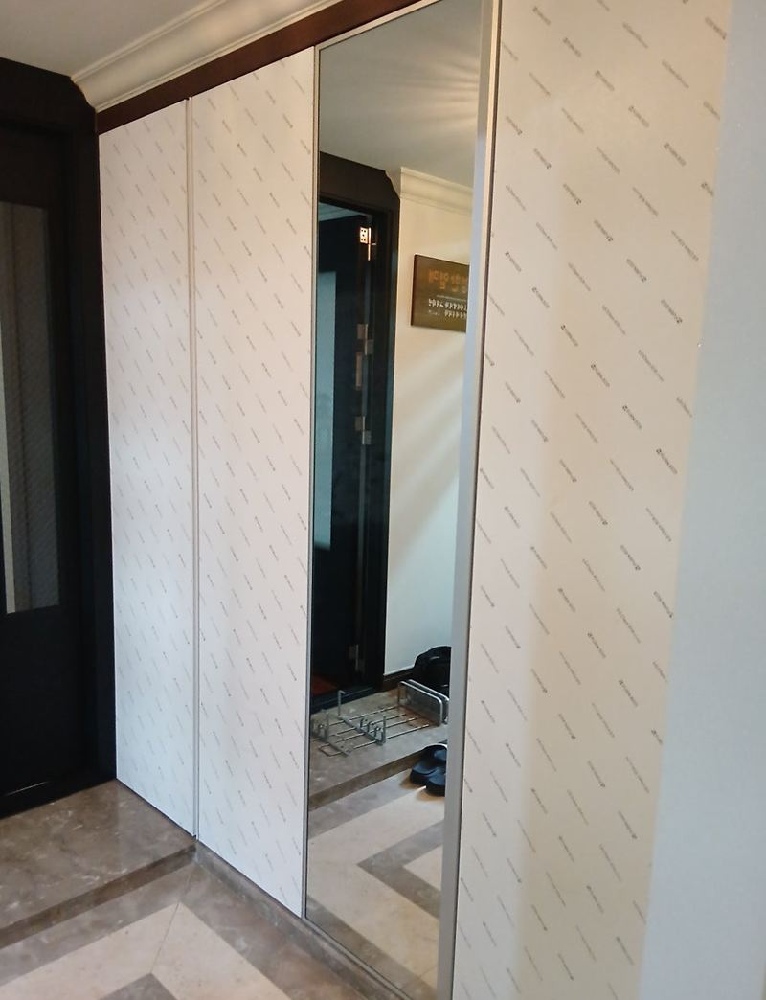
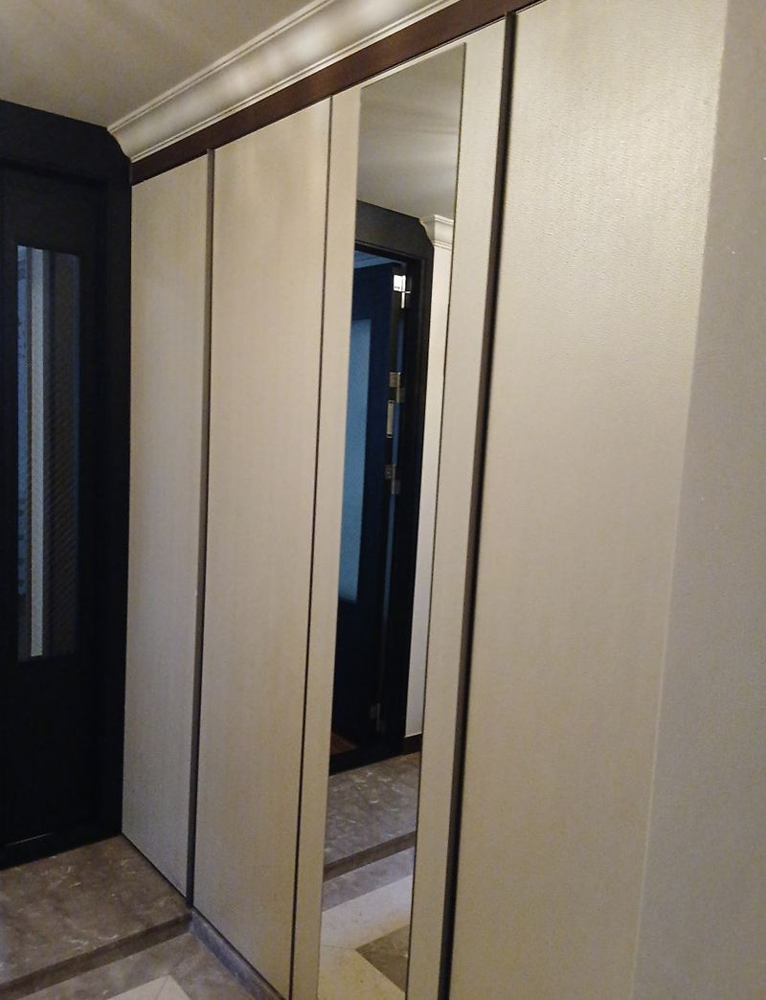
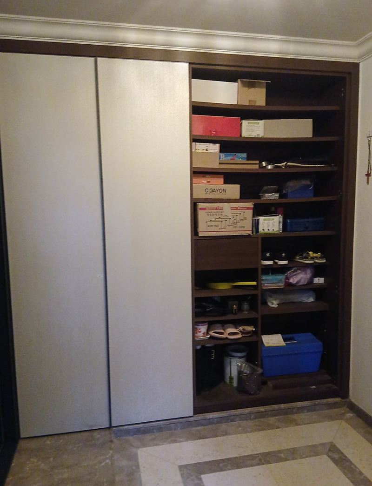
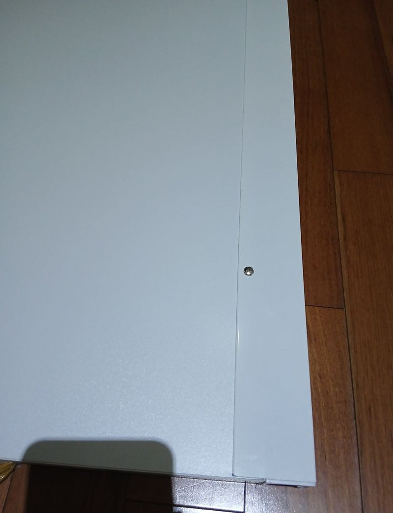
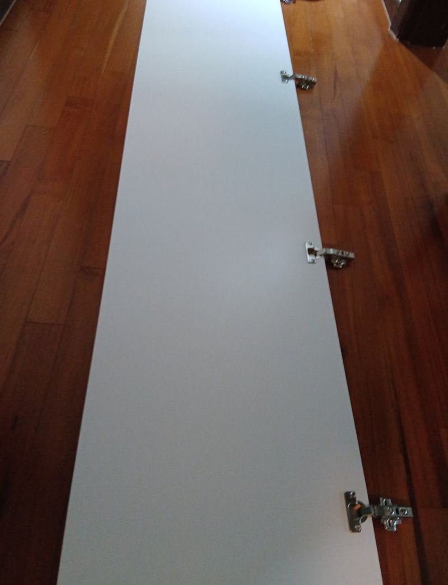
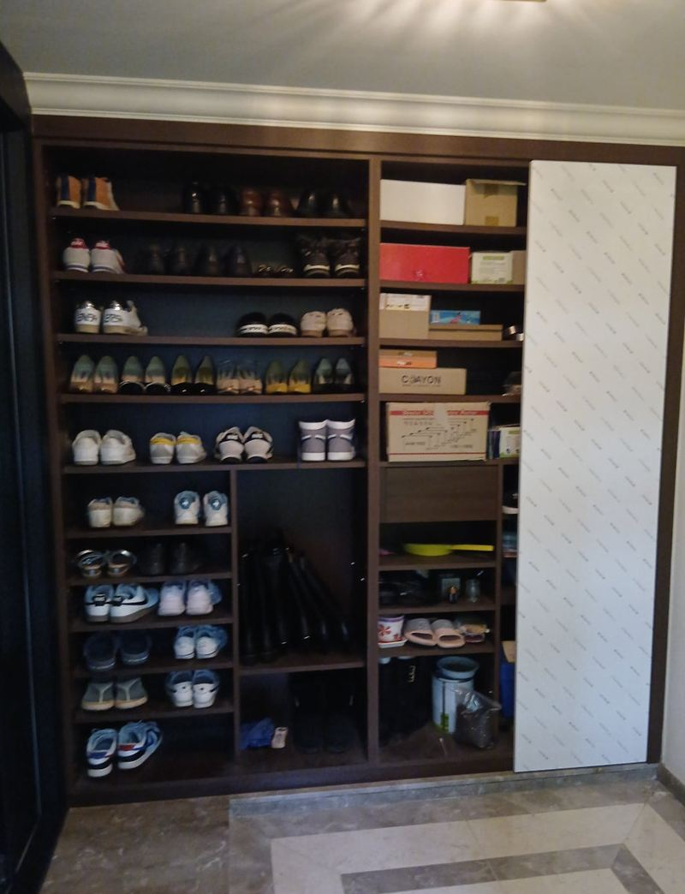

성남 신발장 거울문 설치 방법과 주의사항
← 밀어서 전후 비교 →
"산 지 10년이 넘어서 신발장 문 색이 촌스럽고 현관도 답답해 보여요. 문만 바꾸고 거울을 붙일 수도 있을까요?" 성남 중앙동 아파트 고객분이었어요. 신발장 몸통은 아직 튼튼했지만, 문은 경첩이 닳고 흠집이 많았어요. 통째로 바꾸면 비용이 커지니 문만 손보는 쪽을 원하셨어요. 기존 문을 떼고 프레임 수평을 확인한 뒤, 맞춤 제작한 베이지 톤 거울문을 달고 실리콘으로 마감했어요.
| 현장 | 성남 중원구 중앙동 아파트 현관 신발장 |
|---|---|
| 요청 | 전체 교체 대신 문만 바꾸고 거울로 현관을 넓어 보이게 |
| 한 일 | 실측·색 선택 → 기존 문 탈거 → 프레임 수평 점검 → 맞춤 거울문 장착 → 여닫이 간섭 조정 → 실리콘 마감 |
| 색 | 현관이 환해 보이는 베이지 톤 |
몸통이 멀쩡하면 문만 바꿔요
신발장은 오래 쓰면 문부터 상해요. 매일 여닫으니 경첩이 닳고, 신발에 부딪혀 아래쪽이 긁혀요. 반면 안쪽 몸통과 선반은 습기만 잘 피했다면 오래 버텨요. 이럴 땐 문만 새로 맞추면 공사 범위와 비용을 크게 줄이면서도 현관 인상이 확 바뀌어요.
거울문을 고르면 효과가 하나 더 생겨요. 현관은 대개 창이 없고 좁은데, 거울이 조명을 되비춰 공간이 넓고 밝아 보여요. 나가기 전에 옷매무새를 볼 전신거울도 따로 둘 필요가 없어져요.


신발장 거울문 다는 순서
실측과 색 고르기
문 크기와 경첩 위치를 재고, 거울을 어느 문에 넣을지와 문 색을 정했어요.
기존 문 떼기
닳은 경첩째 문을 떼고, 프레임이 틀어지지 않았는지 수평을 봤어요. 프레임이 기울면 새 문도 비뚤게 닫혀요.


거울문 달기
새 문을 기존 프레임에 맞춰 달고, 열 때 옆 문이나 벽에 부딪히지 않게 높이와 간격을 조정했어요.


실리콘 마감
문 주변 틈을 실리콘으로 마감해 먼지가 들어가고 때가 끼는 걸 줄였어요.
고객분은 "거울이 있으니 현관이 정말 넓어 보이고, 문 색이 바뀌니 고급스러워졌다"며 만족하셨어요.
신발장 모양별로 조심할 것
| 신발장 | 거울문 달 때 볼 것 |
|---|---|
| 붙박이형 | 문만 바꿔도 효과가 커요 |
| 슬림형 | 한 짝만 거울로 해도 충분히 넓어 보여요 |
| 서랍 겸용 | 손잡이가 거울문과 부딪히지 않는지 |
| 벽걸이형 | 거울 무게를 벽 고정이 버티는지 |
| 이동형 | 무게 중심이 앞으로 쏠리지 않는지 |
거울문은 일반 문보다 무거워요. 그래서 경첩을 무게에 맞는 것으로 쓰고, 처음 몇 달은 문이 처지지 않는지 가끔 봐 주시는 게 좋아요.
문만 바꾸기 전에 확인할 것
문만 바꾸는 리폼은 몸통이 튼튼하다는 전제가 있어야 해요. 신발장 바닥판이 물에 불었거나, 옆판이 벽에서 떨어져 기울었다면 새 문을 달아도 금방 처지고 틈이 벌어져요. 그래서 문을 떼고 나면 프레임이 반듯한지, 경첩이 박힐 자리가 단단한지부터 봐요.
신발장은 습기가 많은 자리라 안쪽 냄새나 곰팡이도 함께 살펴요. 문을 바꾸는 김에 안쪽을 한 번 비우고 닦아 두면 새 문 효과가 훨씬 오래가요. 선반이 휘었다면 같은 크기로 새로 넣는 것도 이때 같이 하면 좋아요.
신발장 거울문 질문
모든 문을 거울로 해야 하나요?
한두 짝만 해도 충분해요. 다 거울이면 현관이 어수선해 보일 수 있어요.
문 색은 어떻게 골라요?
바닥 타일과 중문 색을 함께 보고 골라요. 밝은 톤이 현관을 넓어 보이게 해요.
거울이 깨지면 위험하지 않나요?
깨짐 방지 필름이 붙은 거울을 쓰면 조각이 흩어지지 않아요.
손잡이 없는 문으로 할 수 있나요?
누르면 열리는 방식이나 홈 손잡이로 할 수 있어요.
신발장 안 선반도 바꿀 수 있나요?
낡은 선반은 같은 크기로 새로 넣을 수 있어요.
기존 문은 어떻게 하나요?
떼어 낸 문은 원하시면 가지고 나가요.
거울문 테두리 색도 고를 수 있나요?
프레임이 있는 거울문은 테두리 색을 고를 수 있어요. 손잡이와 문 색에 맞추면 깔끔해요.
현관이 어두운데 거울이 도움이 되나요?
현관 조명을 되비춰 한결 밝아 보여요. 조명 바로 맞은편에 두면 효과가 커요.
다른 슬라이딩·붙박이장 현장
신발장 정면과 문 크기를 알려주시면 거울문 구성을 먼저 제안해요.
전화 상담 010-4517-9872